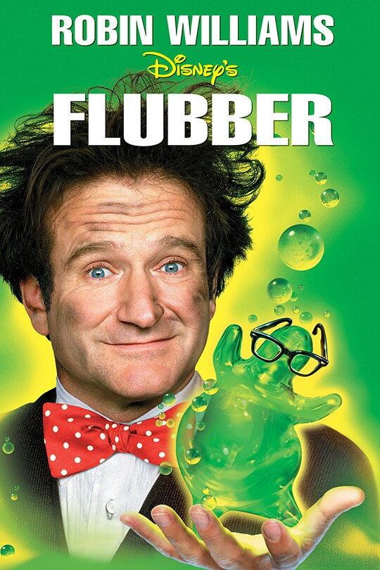

Flubber

Details
My notes
Flubber.
About
The 1997 Disney comedy stars Robin Williams as Professor Phillip Brainard, whose elastic green invention causes extraordinary bouncing.

Flubber.
The 1997 Disney comedy stars Robin Williams as Professor Phillip Brainard, whose elastic green invention causes extraordinary bouncing.